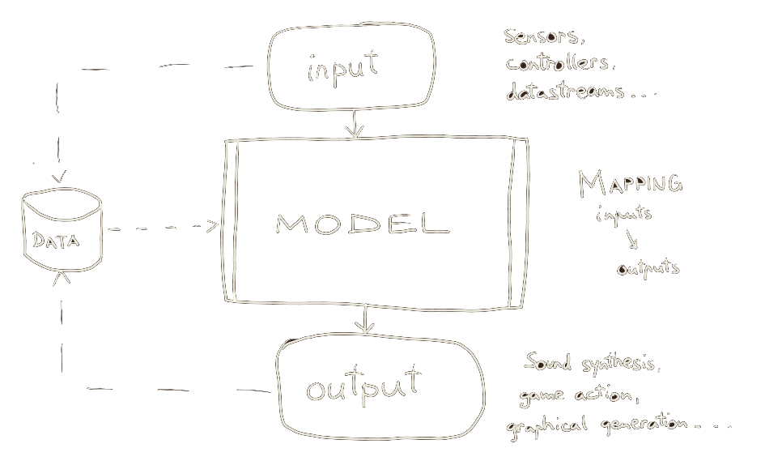
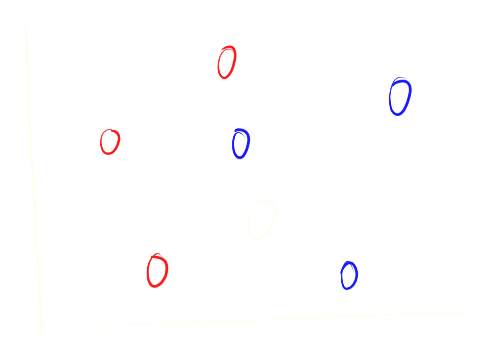
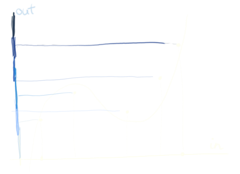
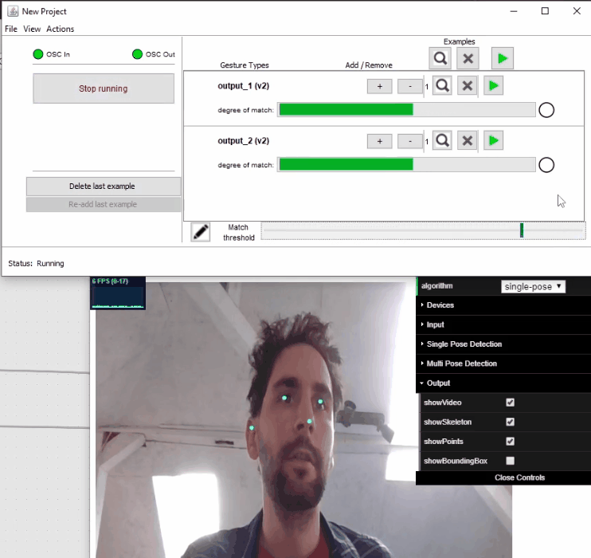

class: center, middle .title[Creative Coding and Software Design 3] <br/><br/> .subtitle[Temporal modelling] <br/><br/><br/><br/><br/><br/> .date[Oct 2022] <br/><br/><br/> .note[Created with [Liminal](https://github.com/jonathanlilly/liminal) using [Remark.js](http://remarkjs.com/) + [Markdown](https://github.com/adam-p/markdown-here/wiki/Markdown-Cheatsheet) + [KaTeX](https://katex.org)] ??? Author: Grigore Burloiu, UNATC --- name: toc class: left # ★ Table of Contents ★ <!-- omit in toc --> 1. [Supervised learning](#supervised-learning) 2. [Time series modelling](#time-series-modelling) 3. [Dynamic time warping (DTW)](#dynamic-time-warping-dtw) 4. [Wekinator example](#wekinator-example) <!-- Comment out the next slide if you don't want the Table of Contents link --> --- layout: true .toc[[★](#toc)] --- name: supervised-learning class: left # Supervised learning input-output pairs are learned together input ~ *data*, output ~ *label* -- → input+output ~ *labelled data*  --- ## sup.ML tasks .left-column[ classification  ] -- .right-column[ regression  ] -- <br/><br/><br/><br/><br/><br/><br/><br/><br/><br/> temporal modelling - classification/regression *over time* --- name: classification ## Classification assign a *label* to an input - in: raw data and/or *features* - out: label_1 OR label_2 OR ... label_n example: [epic NHL goal celebration](https://blog.francoismaillet.com/epic-celebration/) --- name: regression ## Regression assign a *value* to an input - in: raw data and/or *features* - out: continuous $f(input)$ .left-column[ ] -- .right-column[  ] --- ## Regression → Classification post-processing - thresholding (e.g. binary: $≷ 0.5$) - argmax (e.g. $c_1(x) = 0.1, c_2(x) = 0.7, c_3(x) = 0.4$) -- why use “pure” classification at all? --- name: time-series-modelling # Time series modelling time series ~ sequential + timestamped data -- recap [time series processing](03-02-classification#30) being able to *follow* time series: - classification - sync --- ## Temporal modelling algorithms .right-column[ <iframe width="100%" height="300" src="https://www.youtube.com/embed/_K1OsqCicBY" title="YouTube video player" frameborder="0" allow="accelerometer; autoplay; clipboard-write; encrypted-media; gyroscope; picture-in-picture" allowfullscreen></iframe> ] warping - ~ regression -- probabilistic - ~ HMM / bayesian -- big data - the standard algos (DTW …) can be accel’d through DL ([Raffel](https://www.colinraffel.com/publications/thesis.pdf)) current DL approaches: RNN, LSTM, Seq2Seq, Transformer, ... --- name: dynamic-time-warping-dtw # Dynamic time warping (DTW) .right-column[  ] dynamical programming distance between vectors - at every point in the series -- online DTW: real-time sync <iframe width="50%" height="300" src="https://www.youtube.com/embed/EIS1bAxAiNc" title="YouTube video player" frameborder="0" allow="accelerometer; autoplay; clipboard-write; encrypted-media; gyroscope; picture-in-picture" allowfullscreen></iframe> --- ## "poor man's" temporal modelling standard classification / regression input: `[ t, t-1, t-2,..., t-T ]` - (every input frame also includes past information) [WekiInputHelper](http://www.wekinator.org/input-helper/) --- ## Examples & tools time sync + big data [infinite bad guy](https://billie.withyoutube.com/) gesture sonification [como.ircam.fr](https://como.ircam.fr) Max [MuBu](https://forum.ircam.fr/projects/detail/mubu/) Unity [interactML](https://github.com/Interactml/iml-unity/wiki/5.-Record-Training-Examples) --- name: wekinator-example # Wekinator example gesture classification - [PoseNet for Max](https://github.com/yuichkun/n4m-posenet) - [PoseNet OSC](https://github.com/tommymitch/posenetosc) - [...](https://github.com/tensorflow/tfjs-models/tree/master/pose-detection)  --- ## Wekinator: new project 1. listening port 2. number of inputs - (features: MFCCs, pixel brightness, x,y,z coords etc.) 3. outputs type - classifier, continuous (regression), **DTW (temporal)** 4. number of *gestures* - (how many commands are we detecting?) 5. target IP:port [instructions @ wekinator.org](http://www.wekinator.org/detailed-instructions/#Dynamic_time_warping_in_Wekinator) --- ## Wekinator: usage 1. select desired output / gesture 2. hold `+` while recording input sequence 3. again 1.-2. for all gestures 4. <span style="color:black">Train: the ML model</span> 5. Run: now inputs directly control the outputs -- optionally, choose between - continuous output - results “on demand” see also [controlling Wekinator via OSC](http://www.wekinator.org/detailed-instructions/#Controlling_Wekinator_via_OSC_messages)